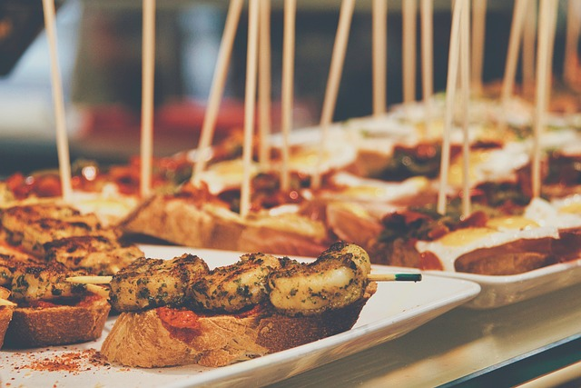
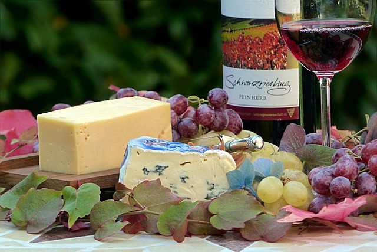

Eventos Realizados en Nuestro Local
En nuestra sociedad gastronómica y cultural hemos celebrado diversos eventos que resaltan la riqueza de nuestra cultura culinaria y nuestras tradiciones. Aquí te compartimos algunos de ellos:
Festival de Pintxos Tradicionales
Fecha: 15 de marzo de 2023
Un evento dedicado a los pintxos, una de las formas más representativas de la gastronomía vasca. Nuestros socios y visitantes disfrutaron de una variedad de pintxos preparados con recetas tradicionales, en un ambiente de camaradería y cultura.
Cata de Vinos y Quesos Vascos
Fecha: 22 de julio de 2023
Organizamos una cata exclusiva de vinos y quesos de la región, donde los asistentes tuvieron la oportunidad de degustar productos locales y aprender sobre la producción vinícola y quesera de la región. Fue una velada de aprendizaje y sabores inolvidables.
